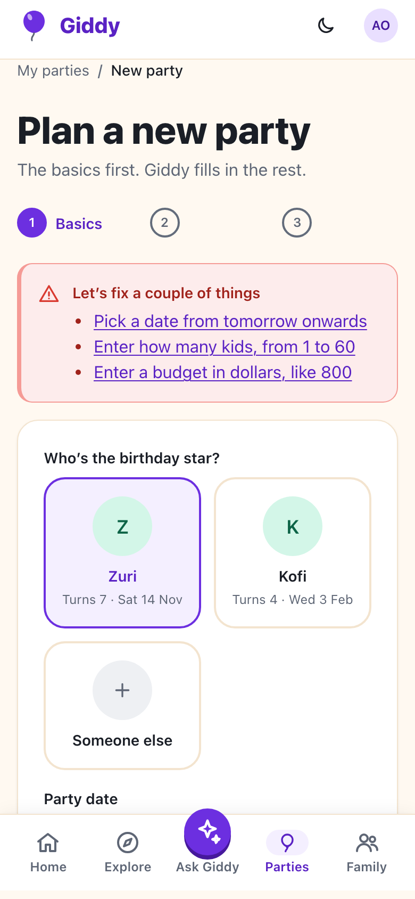
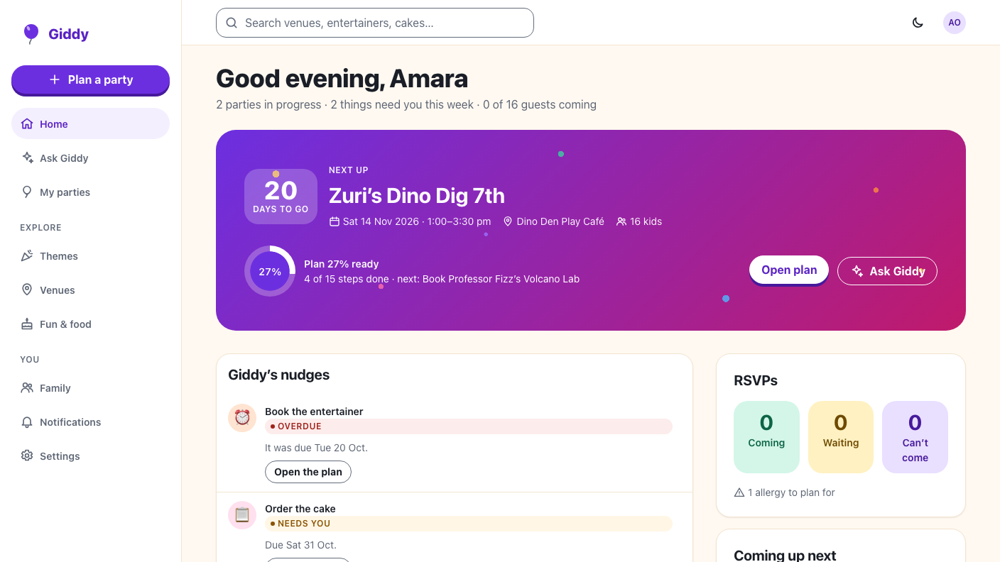

Giddy · Video 03
Start a party plan
Basics, readiness, the overview, locking and deleting
Basics, readiness, the overview, locking and deleting
Birthday and postal-code defaults, a typical-budget hint, then straight into Ask Giddy.

(done tasks + confirmed bookings) ÷ (all tasks + planned bookings): (3 + 1) ÷ (10 + 5) = 27%. Bookings load on their own.
Cancel first; the exact name to confirm. Owner only: co-planners and viewers get 403, strangers 404.
A past party is read-only, with thank-yous and Reuse this plan. The server answers 409 to changes.

Creation and validation, readiness, overview, the Toronto-midnight lock, owner-only delete with another family's token, nudges.
Form, lists, overview, delete dialog and Home against the fake API at 360 and 1280px, with axe.
Next: find and compare venues